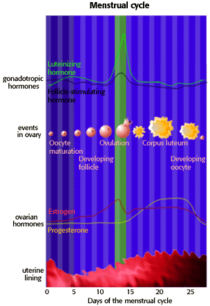

Human Reproduction Problem Set
Problem 5: Female reproductive cycle
Tutorial to help answer the question
| In a "typical" 28 day female reproductive cycle, on which day following the beginning of the menstrual period is the level of luteinizing hormone most likely to be highest? |
Tutorial
Reproductive cycle
| As we saw in problem 4, it is the interaction of the gonadotropic hormones and the ovarian hormones that controls the reproductive cycle. | |
|
The first 12 days
For the first 12 days of the menstrual cycle, estrogen has a negative effect on the production of gonadotropins. Following these 12 days the negative effect changes to a positive effect on the production of gonadotropic hormones. This results in a small increase of follicle stimulating hormone (FSH), but a large increase of luteinizing hormone (LH.)
Ovulation
End of the cycle
Continued high levels of estrogen and progesterone produce a negative feedback on the secretion of gonadotropins by the anterior pituitary gland. |
 |


University of Arizona
Updated: July 15, 1999
Contact the Development Team
http://www.biology.arizona.edu
All contents copyright © 1996-99. All rights reserved.